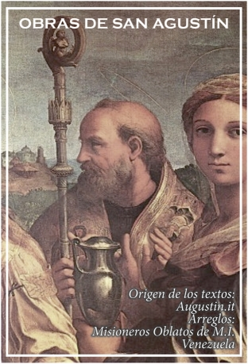

Indice General

INDICE
---- Possidio - Vida de San Agustín
---- Cronología
AUTOBIOGRAFICAS
CONFESSIONES
REVISIONES
LIBRO PRIMERO
LIBRO SEGUNDO
LIBRO TERCERO
LIBRO CUARTO
LIBRO QUINTO
LIBRO SEXTO
LIBRO SÉPTIMO
LIBRO OCTAVO
LIBRO NOVENO
LIBRO DÉCIMO
LIBRO UNDÉCIMO
LIBRO DUODÉCIMO
LIBRO DECIMOTERCERO
LAS RETRACTACIONES
Libro Primero
Libro Primero
Libro segundo
OCHENTA Y TRES CUESTIONES DIVERSAS
FILOSOFICAS
CONTRA LOS ACADÉMICOS
LIBRO I
LIBRO II
LIBRO III
DE LA VIDA FELIZ
EL ORDEN
LIBRO PRIMERO
LIBRO SEGUNDO
LOS SOLILOQUIOS
LIBRO PRIMERO
LIBRO SEGUNDO
LA INMORTALIDAD DEL ALMA
LA DIALÉCTICA
LA DIMENSIÓN DEL ALMA
DEL LIBRE ALBEDRÍO
LIBRO I
LIBRO II
LIBRO III
LA MÚSICA
LIBRO I
LIBRO II
LIBRO III
LIBRO IV
LIBRO V
LIBRO VI
DEL MAESTRO
DOGMATICAS
DE LA VERDADERA RELIGIÓN
DE LA UTILIDAD DE CREER
DE LA FE EN LO QUE NO SE VE
LA ADIVINACIÓN DIABÓLICA
LA CIUDAD DE DIOS
ÍNDICE
LIBRO I
LIBRO II
LIBRO III
LIBRO IV
LIBRO V
LIBRO VI
LIBRO VII
LIBRO VIII
LIBRO IX
LIBRO X
LIBRO XI
LIBRO XII
LIBRO XIII
LIBRO XIV
LIBRO XV
LIBRO XVI
LIBRO XVII
LIBRO XVIII
LIBRO XIX
LIBRO XX
LIBRO XXI
LIBRO XXII
LA FE Y EL SÍMBOLO DE LOS APÓSTOLES
OCHENTA Y TRES CUESTIONES DIVERSAS
CUESTIONES DIVERSAS A SIMPLICIANO
LIBRO I
LIBRO II
LA FE Y LAS OBRAS
MANUAL DE LA FE, DE LA ESPERANZA Y DE LA CARIDAD (ENQUIRIDON) A Lorenzo
LA SANTÍSIMA TRINIDAD
LIBRO I
LIBRO II
LIBRO III
LIBRO IV
LIBRO V
LIBRO VI
LIBRO VII
LIBRO VIII
LIBRO IX
LIBRO X
LIBRO XI
LIBRO XII
LIBRO XIII
LIBRO XIV
LIBRO XV
EXEGETICAS
SOBRE LA DOCTRINA CRISTIANA
LIBRO I
LIBRO II
LIBRO III
LIBRO IV
EL ESPEJO DE LA SAGRADA ESCRITURA
DEL GÉNESIS CONTRA LOS MANIQUEOS
LIBRO I
LIBRO II
DEL GÉNESIS A LA LETRA, INCOMPLETO
DEL GÉNESIS A LA LETRA (Retractaciones)
DEL GÉNESIS A LA LETRA
LIBRO I
LIBRO II
LIBRO III
LIBRO IV
LIBRO V
LIBRO VI
LIBRO VII
LIBRO VIII
LIBRO IX
LIBRO X
LIBRO XI
LIBRO XII
LOCUCIONES DEL HEPTATEUCO
LIBRO PRIMERO
LIBRO SEGUNDO
LIBRO TERCERO
LIBRO CUARTO
LIBRO QUINTO
LIBRO SEXTO
LIBRO SÉPTIMO
CUESTIONES SOBRE EL HEPTATEUCO
LIBRO I
LIBRO II
LIBRO III
LIBRO IV
LIBRO V
LIBRO VI
LIBRO VII
ANOTACIONES AL LIBRO DE JOB
CAPÍTULOS I-X
CAPÍTULOS XI-XX
CAPÍTULOS XXI-XXX
CAPÍTULOS XXXI-XXXII
CAPÍTULOS XXXVIII-XXXIX
OCHO CUESTIONES DEL ANTIGUO TESTAMENTO
SERMÓN DE LA MONTAÑA
LIBRO PRIMERO
CUESTIONES SOBRE LOS EVANGELIOS
Títulos Libro I
Libro primero
Títulos Libro II
Libro segundo
EXPOSICIÓN DE ALGUNOS TEXTOS DE LA CARTA A LOS ROMANOS
EXPOSICIÓN DE LA CARTA A LOS GÁLATAS
EXPOSICIÓN INCOADA DE LA CARTA A LOS ROMANOS
DIECISIETE CUESTIONES SOBRE EL EVANGELIO DE SAN MATEO
LA CONCORDANCIA DE LOS EVANGELISTAS
LIBRO I
LIBRO II
LIBRO III
LIBRO IV
CARTAS
CARTAS
CARTA 1
CARTA 2
CARTA 3
CARTA 4
CARTA 5
CARTA 6
CARTA 7
CARTA 8
CARTA 9
CARTA 10
CARTA 11
CARTA 12
CARTA 13
CARTA 14
CARTA 15
CARTA 16
CARTA 17
CARTA 18
CARTA 19
CARTA 20
CARTA 21
CARTA 22
CARTA 23
CARTA 24
CARTA 25
CARTA 26
CARTA 27
CARTA 28
CARTA 29
CARTA 30
CARTA 31
CARTA 32
CARTA 33
CARTA 34
CARTA 35
CARTA 36
CARTA 37
CARTA 38
CARTA 39
CARTA 40
CARTA 41
CARTA 42
CARTA 43
CARTA 44
CARTA 45
CARTA 46
CARTA 47
CARTA 48
CARTA 49
CARTA 50
CARTA 51
CARTA 52
CARTA 53
CARTA 54
CARTA 55
CARTA 56
CARTA 57
CARTA 58
CARTA 59
CARTA 60
CARTA 61
CARTA 62
CARTA 63
CARTA 64
CARTA 65
CARTA 66
CARTA 67
CARTA 68
CARTA 69
CARTA 70
CARTA 71
CARTA 72
CARTA 73
CARTA 74
CARTA 75
CARTA 76
CARTA 77
CARTA 78
CARTA 79
CARTA 80
CARTA 81
CARTA 82
CARTA 83
CARTA 84
CARTA 85
CARTA 86
CARTA 87
CARTA 88
CARTA 89
CARTA 90
CARTA 91
CARTA 92
CARTA 92A
CARTA 93
CARTA 94
CARTA 95
CARTA 96
CARTA 97
CARTA 98
CARTA 99
CARTA 100
CARTA 101
CARTA 102
CART A 103
CART A 104
CARTA 105
CARTA 106
CARTA 107
CARTA 108
CARTA 109
CARTA 110
CARTA 111
CARTA 112
CARTA 113
CARTA 114
CARTA 115
CARTA 116
CARTA 117
CARTA 118
CARTA 119
CARTA 120
CARTA 121
CARTA 122
CARTA 123
CARTA 124
CARTA 125
CARTA 126
CARTA 127
CARTA 128
CARTA 129
CARTA 130
CARTA 131
CARTA 132
CARTA 133
CARTA 134
CARTA 135
CARTA 136
CARTA 137
CARTA 138
CARTA 139
CARTA 140
CARTA 141
CARTA 142
CARTA 143
CARTA 144
CARTA 145
CARTA 146
CARTA 147
CARTA 148
CARTA 149
CARTA 150
CARTA 151
CARTA 152
CARTA 153
CARTA 154
CARTA 155
CARTA 156
CARTA 157
CARTA 158
CARTA 159
CARTA 160
CARTA 161
CARTA 162
CARTA 163
CARTA 164
CARTA 165
CARTA 166
CARTA 167
CARTA 168
CARTA 169
CARTA 170
CARTA 171
CARTA 171 A
CARTA 172
CARTA 173
CARTA 173 A
CARTA 174
CARTA 175
CARTA 176
CARTA 177
CARTA 178
CARTA 179
CARTA 180
CARTA 181
CARTA 182
CARTA 183
CARTA 184
CARTA 184 A
CARTA 185
CARTA 185 A
CARTA 186
CARTA 187
CARTA 188
CARTA 189
CARTA 190
CARTA 191
CARTA 192
CARTA 193
CARTA 194
CARTA 195
CARTA 196
CARTA 197
CARTA 198
CARTA 199
CARTA 200
CARTA 201
CARTA 202
CARTA 202A
CARTA 203
CARTA 204
CARTA 205
CARTA 206
CARTA 207
CARTA 208
CARTA 209
CARTA 210
CARTA 211
CARTA 212
CARTA 212/A [1/A*] [J. Divjak]
CARTA 213
CARTA 214
CARTA 215
CARTA 215A
CARTA 216
CARTA 217
CARTA 218
CARTA 219
CARTA 220
CARTA 221
CARTA 222
CARTA 223
CARTA 224
CARTA 225
CARTA 226
CARTA 227
CARTA 228
CARTA 229
CARTA 230
CARTA 231
CARTA 232
CARTA 233
CARTA 234
CARTA 235
CARTA 236
CARTA 237
CARTA 238
CARTA 239
CARTA 240
CARTA 241
CARTA 242
CARTA 243
CARTA 244
CARTA 245
CARTA 246
CARTA 247
CARTA 248
CARTA 249
CARTA 250
CARTA 250/A
CARTA 251
CARTA 252
CARTA 253
CARTA 254
CARTA 255
CARTA 256
CARTA 257
CARTA 258
CARTA 259
CARTA 260
CARTA 261
CARTA 262
CARTA 263
CARTA 264
CARTA 265
CARTA 266
CARTA 267
CARTA 268
CARTA 269
CARTA 270
CARTA 1* [J. Divjak] [271]
CARTA 1/A* [J. Divjak] [212/A]
CARTA 2* [J. Divjak] [272]
CARTA 3* [J. Divjak] [273]
CARTA 4* [J. Divjak] [274]
CARTA 5* [J. Divjak] [275]
CARTA 6* [J. Divjak] [276]
CARTA 7* [J. Divjak] [277]
CARTA 8* [J. Divjak] [278]
CARTA 9* [J. Divjak] [279]
CARTA 10* [J. Divjak] [280]
CARTA 11* [J. Divjak] [281]
CARTA 12* [J. Divjak] [282]
CARTA 13* [J. Divjak] [283]
CARTA 14* [J. Divjak] [284]
CARTA 15* [J. Divjak] [285]
CARTA 16* [J. Divjak] [286]
CARTA 17* [J. Divjak] [287]
CARTA 18* [J. Divjak] [288]
CARTA 19* [J. Divjak] [289]
CARTA 20* [J. Divjak] [290]
CARTA 21* [J. Divjak] [291]
CARTA 22* [J. Divjak] [292]
CARTA 23* [J. Divjak] [293]
CARTA 23/A* [J. Divjak] [294]
CARTA 24* [J. Divjak] [295]
CARTA 25* [J. Divjak] [296]
CARTA 26* [J. Divjak] [297]
CARTA 27* [J. Divjak] [298]
CARTA 28* [J. Divjak] [299]
CARTA 29* [J. Divjak] [300]
SALMOS
INDICE SALMOS
TABLA CRONOLÓGICA
EXPOSICIÓN DEL SALMO 1
EXPOSICIÓN DEL SALMO 2
EXPOSICIÓN DEL SALMO 3
EXPOSICIÓN DEL SALMO 4
EXPOSICIÓN DEL SALMO 5
EXPOSICIÓN DEL SALMO 6
EXPOSICIÓN DEL SALMO 7
EXPOSICIÓN DEL SALMO 8
EXPOSICIÓN DEL SALMO 9
EXPOSICIÓN DEL SALMO 10
EXPOSICIÓN DEL SALMO 11
EXPOSICIÓN DEL SALMO 12
EXPOSICIÓN DEL SALMO 13
EXPOSICIÓN DEL SALMO 14
EXPOSICIÓN DEL SALMO 15
EXPOSICIÓN DEL SALMO 16
EXPOSICIÓN DEL SALMO 17
EXPOSICIÓN PRIMERA DEL SALMO 18
EXPOSICIÓN SEGUNDA DEL SALMO 18
EXPOSICIÓN DEL SALMO 19
EXPOSICIÓN DEL SALMO 20
EXPOSICIÓN PRIMERA DEL SALMO 21
EXPOSICIÓN SEGUNDA DEL SALMO 21
EXPOSICIÓN DEL SALMO 22
EXPOSICIÓN DEL SALMO 23
EXPOSICIÓN DEL SALMO 24
EXPOSICIÓN PRIMERA DEL SALMO 25
EXPOSICIÓN SEGUNDA DEL SALMO 25
EXPOSICIÓN PRIMERA DEL SALMO 26
EXPOSICIÓN SEGUNDA DEL SALMO 26
EXPOSICIÓN DEL SALMO 27
EXPOSICIÓN DEL SALMO 28
EXPOSICIÓN PRIMERA DEL SALMO 29
EXPOSICIÓN SEGUNDA DEL SALMO 29
EXPOSICIÓN PRIMERA DEL SALMO 30
EXPOSICIÓN SEGUNDA DEL SALMO 30
EXPOSICIÓN SEGUNDA DEL SALMO 30
EXPOSICIÓN SEGUNDA DEL SALMO 30 Sermón tercero
EXPOSICIÓN PRIMERA DEL SALMO 31
EXPOSICIÓN SEGUNDA DEL SALMO 31
EXPOSICIÓN PRIMERA DEL SALMO 32
EXPOSICIÓN SEGUNDA DEL SALMO 32
EXPOSICIÓN SEGUNDA DEL SALMO 32
EXPOSICIÓN DEL SALMO 33
EXPOSICIÓN DEL SALMO 33
EXPOSICIÓN DEL SALMO 34
EXPOSICIÓN DEL SALMO 34
EXPOSICIÓN DEL SALMO 35
EXPOSICIÓN DEL SALMO 36
EXPOSICIÓN DEL SALMO 36
EXPOSICIÓN DEL SALMO 36
EXPOSICIÓN DEL SALMO 37
EXPOSICIÓN DEL SALMO 38
EXPOSICIÓN DEL SALMO 39
EXPOSICIÓN DEL SALMO 40
EXPOSICIÓN DEL SALMO 41
EXPOSICIÓN DEL SALMO 42
EXPOSICIÓN DEL SALMO 43
EXPOSICIÓN DEL SALMO 44
EXPOSICIÓN DEL SALMO 45
EXPOSICIÓN DEL SALMO 46
EXPOSICIÓN DEL SALMO 47
EXPOSICIÓN DEL SALMO 48
EXPOSICIÓN DEL SALMO 48
EXPOSICIÓN DEL SALMO 49
EXPOSICIÓN DEL SALMO 50
EXPOSICIÓN DEL SALMO 51
EXPOSICIÓN DEL SALMO 52
EXPOSICIÓN DEL SALMO 53
EXPOSICIÓN DEL SALMO 54
EXPOSICIÓN DEL SALMO 55
EXPOSICIÓN DEL SALMO 56
EXPOSICIÓN DEL SALMO 57
EXPOSICIÓN DEL SALMO 58
EXPOSICIÓN DEL SALMO 58
EXPOSICIÓN DEL SALMO 59
EXPOSICIÓN DEL SALMO 60
SALMO 61
SALMO 62
SALMO 63
SALMO 64
SALMO 65
SALMO 66
SALMO 67
SALMO 68
SALMO 68 II
SALMO 69
SALMO 70
SALMO 70
SALMO 71
SALMO 72
SALMO 73
SALMO 74
SALMO 75
SALMO 76
SALMO 77
SALMO 78
SALMO 79
SALMO 80
SALMO 81
SALMO 82
SALMO 83
SALMO 84
SALMO 85
SALMO 86
SALMO 87
SALMO 88 I
SALMO 88 II
SALMO 89
SALMO 90 I
SALMO 90 II
SALMO 91
SALMO 92
SALMO 93
SALMO 94
SALMO 95
SALMO 96
SALMO 97
SALMO 98
SALMO 99
SALMO 100
SALMO 101 I
SALMO 101 II
SALMO 102
SALMO 103 I
SALMO 103 II
SALMO 103 III
SALMO 103 IV
SALMO 104
SALMO 105
SALMO 106
SALMO 107
SALMO 108
SALMO 109
SALMO 110
SALMO 111
SALMO 112
SALMO 113 I
SALMO 113 II
SALMO 114
SALMO 115
SALMO 116
SALMO 117
SALMO 118 (SERMONES 1-10)
SALMO 118 (SERMONES 11-20)
SALMO 118 (SERMONES 21-32)
SALMO 119
SALMO 120
SALMO 121
SALMO 122
SALMO 123
SALMO 124
SALMO 125
SALMO 126
SALMO 127
SALMO 128
SALMO 129
SALMO 130
SALMO 131
SALMO 132
SALMO 133
SALMO 134
SALMO 135
SALMO 136
SALMO 137
SALMO 138
SALMO 139
SALMO 140
SALMO 141
SALMO 142
SALMO 143
SALMO 144
SALMO 145
SALMO 146
SALMO 147
SALMO 148
SALMO 149
SALMO 150
HOMILETICA
COMENTARIOS AL EVANGELIO DE SAN JUAN
TRATADOS SOBRE LA PRIMERA CARTA DE SAN JUAN
SOBRE LA PRIMERA CARTA DE SAN JUAN A LOS PARTOS
PRÓLOGO
Homilía primera
HOMILÍA SEGUNDA
HOMILÍA TERCERA
HOMILÍA CUARTA
HOMILÍA QUINTA
HOMILÍA SEXTA
HOMILÍA SÉPTIMA
HOMILÍA OCTAVA
HOMILÍA NOVENA
HOMILÍA DÉCIMA
TRATADO 1
TRATADO 2
TRATADO 3
TRATADO 4
TRATADO 5
TRATADO 6
TRATADO 7
TRATADO 8
TRATADO 9
TRATADO 10
TRATADO 11
TRATADO 12
TRATADO 13
TRATADO 14
TRATADO 15
TRATADO 16
TRATADO 17
TRATADO 18
TRATADO 19
TRATADO 20
TRATADO 21
TRATADO 22
TRATADO 23
TRATADO 24
TRATADO 25
TRATADO 26
TRATADO 27
TRATADO 28
TRATADO 29
TRATADO 30
TRATADO 31
TRATADO 32
TRATADO 33
TRATADO 34
TRATADO 35
TRATADO 36
TRATADO 37
TRATADO 38
TRATADO 39
TRATADO 40
TRATADO 41
TRATADO 42
TRATADO 43
TRATADO 44
TRATADO 45
TRATADO 46
TRATADO 47
TRATADO 48
TRATADO 49
TRATADO 50
TRATADO 51
TRATADO 52
TRATADO 53
TRATADO 54
TRATADO 55
TRATADO 56
TRATADO 57
TRATADO 58
TRATADO 59
TRATADO 60
TRATADO 61
TRATADO 62
TRATADO 63
TRATADO 64
TRATADO 65
TRATADO 66
TRATADO 67
TRATADO 68
TRATADO 69
TRATADO 70
TRATADO 71
TRATADO 72
TRATADO 73
TRATADO 74
TRATADO 75
TRATADO 76
TRATADO 77
TRATADO 78
TRATADO 79
TRATADO 80
TRATADO 81
TRATADO 82
TRATADO 83
TRATADO 84
TRATADO 85
TRATADO 86
TRATADO 87
TRATADO 88
TRATADO 89
TRATADO 90
TRATADO 91
TRATADO 92
TRATADO 93
TRATADO 94
TRATADO 95
TRATADO 96
TRATADO 97
TRATADO 98
TRATADO 99
TRATADO 100
TRATADO 101
TRATADO 102
TRATADO 103
TRATADO 104
TRATADO 105
TRATADO 106
TRATADO 107
TRATADO 108
TRATADO 109
TRATADO 110
TRATADO 111
TRATADO 112
TRATADO 113
TRATADO 114
TRATADO 115
TRATADO 116
TRATADO 117
TRATADO 118
TRATADO 119
TRATADO 120
TRATADO 121
TRATADO 122
TRATADO 123
TRATADO 124
SERMONES
INDICE SERMONES
Tabla cronológica de los sermones
DISCORSI
SERMÓN 1
SERMÓN 2
SERMÓN 3
SERMÓN 4
SERMÓN 4A
SERMÓN 5
SERMÓN 6
SERMÓN 7
SERMÓN 8 (= Frangipane 1)
SERMÓN 9
SERMÓN 10
SERMÓN 11
SERMÓN 12
SERMÓN 13
SERMÓN 14
SERMÓN 15
SERMÓN 15 A (= Denis 21)
SERMÓN 16
SERMÓN 16 A (=DENIS 20)
SERMÓN 16 B (= MAI 17)
SERMÓN 17
SERMÓN 18
SERMÓN 19
SERMÓN 20
SERMÓN 20 A (= Lambot 24)
SERMÓN 21
SERMÓN 22
SERMÓN 22 A (= Mai 15)
SERMÓN 23
SERMÓN 23 A (= Mai 16)
SERMÓN 24
SERMÓN 25
SERMÓN 25 A (=Morin 12)
SERMÓN 26
SERMÓN 27
SERMÓN 28
SERMÓN 28 A (=Dolbeau 9)
SERMÓN 29
SERMÓN 29 A (=Denis 9)
SERMÓN 30
SERMÓN 31
SERMÓN 32
SERMÓN 33
SERMÓN 33 A (=Denis 23)
SERMÓN 34
SERMÓN 35
SERMÓN 36
SERMÓN 37
SERMÓN 38
SERMÓN 39
SERMÓN 40
SERMÓN 41
SERMÓN 42
SERMÓN 43
SERMÓN 44
SERMÓN 45
SERMÓN 46
SERMÓN 47
SERMÓN 48
SERMÓN 49
SERMÓN 49 A
SERMÓN 50
SERMÓN 51
SERMÓN 53
SERMÓN 53 A (=Morin 11)
SERMÓN 54
SERMÓN 55
SERMÓN 56
SERMÓN 57
SERMÓN 58
SERMÓN 59
SERMÓN 60 (=Lambot 19)
SERMÓN 60 A (=Mai 26)
SERMÓN 61
SERMÓN 61 A (=Wilmart l2)
SERMÓN 62
SERMÓN 62 A (=Morin 6)
SERMÓN 63
SERMÓN 63 A (=Mai 25)
SERMÓN 63B (=Morin 7)
SERMÓN 64 (=Lambot 12)
SERMÓN 64A (=Mai 20)
SERMÓN 65
SERMÓN 65 A (=Etaix 1)
SERMÓN 66
SERMÓN 67
SERMÓN 68 (=Mai l26)
SERMÓN 69
SERMÓN 70
SERMÓN 70 A (=Mai 127)
SERMÓN 71
SERMÓN 72 Aum. (= Dolbeau 16)
SERMÓN 72 A (= Denis 25)
SERMÓN 73
SERMÓN 73 A (=Caillau II,5)
SERMÓN 74
SERMÓN 75
SERMÓN 76
SERMÓN 77
SERMÓN 77 A (=Guelf. 33)
SERMÓN 77 B (=Morin 16)
SERMÓN 77 C (=Frag. Verbraken 7)
SERMÓN 78
SERMÓN 79
SERMÓN 79 A (=Lambot 17)
SERMÓN 80
SERMÓN 81
SERMÓN 82
SERMÓN 83
SERMÓN 84 (Fragmento)
SERMÓN 85
SERMÓN 86
SERMÓN 87
SERMÓN 88
SERMÓN 89
SERMÓN 90
SERMÓN 91
SERMÓN 92
SERMÓN 93
SERMÓN 94
SERMÓN 94 A (=Caillau II, 6)
SERMÓN 95
SERMÓN 96
SERMÓN 97
SERMÓN 97 A (=Bibl. Cas. 2. 114)
SERMÓN 98
SERMÓN 99
SERMÓN 100
SERMÓN 101
SERMÓN 102
SERMÓN 103
SERMÓN 104 (=Guelf. 29)
SERMÓN 105
SERMÓN 105 A (=Lambot 1)
SERMÓN 106
SERMÓN 107
SERMÓN 107 A (=Lambot 5)
SERMÓN 108
SERMÓN 109
SERMÓN 110 (=Morin 13)
SERMÓN 111 (=Lambot 18)
SERMÓN 112
SERMÓN 112 A (=Caillau 2,11)
SERMÓN 113
SERMÓN 113 A (=Denis 24)
SERMÓN 113 B (=Mai 13)
SERMÓN 114
SERMÓN 114 A (=Frangipane 9)
SERMÓN 115
SERMÓN 116
SERMÓN 117
SERMÓN 1181
SERMÓN 119
SERMÓN 120
SERMÓN 121
SERMÓN 122
SERMÓN 123
SERMÓN 124
SERMÓN 125
SERMÓN 125 A (=MAI128)
SERMÓN 126
SERMÓN 127
SERMÓN 128
SERMÓN 129
SERMÓN 130
SERMÓN 131
SERMÓN 132
SERMÓN 132 A (= MAI129)
SERMÓN 133
SERMÓN 134
SERMÓN 135
SERMÓN 136
SERMÓN 136 A (= MAI130)
SERMÓN 136 B (= LAMBOT10)
SERMÓN 136 C (= LAMBOT11= LEMARIÉ)
SERMÓN 137
SERMÓN 138
SERMÓN 139
SERMÓN 139 A (= MAI125)
SERMÓN 140
SERMÓN 140 A(Post Sermonem Mai 174 [Fragm. Verbraken 9])
SERMÓN 141
DESPUÉS DEL SERMÓN 142 (= S. Dolbeau 7)1
SERMÓN 143
SERMÓN 144
SERMÓN 145
SERMÓN 145 A (=Bibliot. Cas. II 136)1
SERMÓN 146
SERMÓN 147
SERMÓN 147 A (=Denis 12)
SERMÓN 148
SERMÓN 149
SERMÓN 150
SERMÓN 151
SERMÓN 152
SERMÓN 153
SERMÓN 154
SERMÓN 154 A (=Morin 4)
SERMÓN 155
SERMÓN 156
SERMÓN 157
SERMÓN 158
SERMÓN 159
SERMÓN 160
SERMÓN 161
SERMÓN 162
SERMÓN 162 A (=Denis 19)
SERMÓN 162 B (=Fragm. Verbraken 11)
SERMÓN 163
SERMON 163 A (=Morin 10)
SERMÓN 163 B (=Frangipane 5)
SERMÓN 164
SERMÓN 164 A (=Lambot 28)
SERMÓN 165
SERMÓN 166
SERMÓN 167
SERMÓN 167 A
SERMÓN 168
SERMÓN 169
SERMÓN 170
SERMÓN 171
SERMÓN 172
SERMÓN 173
SERMÓN 174
SERMÓN 175
SERMÓN 176
SERMÓN 176 A
SERMÓN 177
SERMÓN 178
SERMÓN 179
SERMÓN 179 A (=Wilmart 2)
SERMÓN 180
SERMÓN 181
SERMÓN 182
SERMÓN 183
SERMÓN 184
SERMÓN 185
SERMÓN 186
SERMÓN 187
SERMÓN 188
SERMÓN 189
SERMÓN 190
SERMÓN 191
SERMÓN 192
SERMÓN 193
SERMÓN 194
SERMÓN 195
SERMÓN 196
SERMÓN 196 A
SERMÓN 197[1] 198 (= Dolbeau 26 SERMÓN)
SERMÓN 198 A SERMÓN 198 B SERMÓN 199
SERMÓN 198 A SERMÓN 198 B SERMÓN 199
SERMÓN 198 A SERMÓN 198 B SERMÓN 199
SERMÓN 200
SERMÓN 201
SERMÓN 202
SERMÓN 203
SERMÓN 204
SERMÓN 205
SERMÓN 206
SERMÓN 207
SERMÓN 208
SERMÓN 209
SERMÓN 210
SERMÓN 211
SERMÓN 211 A (= frag. Verbraken 24?25)
SERMÓN 212
SERMÓN 213 (= Guelf. 1)
SERMÓN 214
SERMÓN 215
SERMÓN 216
SERMÓN 217 (= Morin 3)
SERMÓN 218
SERMÓN 218 A (= frag. Verbraken 26.28)
SERMÓN 218 B (= Guelf. 2)
SERMÓN 218 C (= Guelf. 3)
SERMÓN 219
SERMÓN 220
SERMÓN 221 (= Guelf. 5)
SERMÓN 222
SERMÓN 223
SERMÓN 223 A (= Denis 2)
SERMÓN 223 B (= Guelf. 4)
SERMÓN 223 C (= Guelf. 6)
SERMÓN 223 D (= Wilmart 4)
SERMÓN 223 E (= Wilmart 5)
SERMÓN 223 F (= Wilmart 6)
SERMÓN 223 G (= Wilmart 7)
SERMÓN 223 H (= Wilmart 14)
SERMÓN 223 I (= Wilmart 15)
SERMÓN 223 J (= Wilmart 16)
SERMÓN 223 K (= Wilmart 17)
SERMÓN 224
SERMÓN 225
SERMÓN 226
SERMÓN 227
SERMÓN 228
SERMÓN 228 A (= frag. Verbraken29)
SERMÓN 228 B (= Denis 3)
SERMÓN 229 (= Denis 6)
SERMÓN 229 A (= Guelf. 7)
SERMÓN 229 B (= Guelf. 8)
SERMÓN 229 C (= Wilmart 8)
SERMÓN 229 D (= Wilmart 9)
SERMÓN 229 E (= Guelf. 9)
SERMÓN 229 F (= Guelf. 10)
SERMÓN 229 G (= Guelf. 11)
SERMÓN 229 H (= Guelf. 12)
SERMÓN 229 I (= Mai 86)
SERMÓN 229 J (= Guelf. App. 7)
SERMÓN 229 K (= Guelf. 13)
SERMÓN 229 L (= Guelf. 14)
SERMÓN 229 M (= Guelf. 15)
SERMÓN 229 N (= Guelf. 16)
SERMÓN 229 O (= Guelf. 17)
SERMÓN 229 P (= Lambot 3)
SERMÓN 229 R (frag. Lambot 1, Verbraken 30)
SERMÓN 229 S (frag. Lambot 2, Verbraken 31)
SERMÓN 229 T (frag. Lambot 3, Verbraken 32)
SERMÓN 229 U (frag. Lambot 4; Verbraken 33)
SERMÓN 229 V (frag. Lambot 5?7, Verbraken 34?36)
SERMÓN 230
SERMÓN 231
SERMÓN 232
SERMÓN 233
SERMÓN 234
SERMÓN 235
SERMÓN 236
SERMÓN 236 A (= Caillau II 60)
SERMÓN 237
SERMÓN 238
SERMÓN 239
SERMÓN 240
SERMÓN 241
SERMÓN 242
SERMÓN 242 A (Mai 87)
SERMÓN 243
SERMÓN 244
SERMÓN 245
SERMÓN 246
SERMÓN 247
SERMÓN 248
SERMÓN 249
SERMÓN 250
SERMÓN 251
SERMÓN 252
SERMÓN 252 A (= Wilmart 13)
SERMÓN 350 B-C (= Haffner 1 y Étaix 3)1
SERMÓN 350 D (= Erfurt 2)1
SERMÓN 350 E (= Erfurt 3)1
SERMÓN 350 F (= Erfurt 3)1
SERMÓN 253
SERMÓN 254
SERMÓN 352 A (= Dolbeau 14)1
SERMÓN 255
SERMÓN 255 A (= Wilmart 18 + Mai 92)
SERMÓN 256
SERMÓN 257
SERMÓN 258
SERMÓN 259
SERMÓN 260
SERMÓN 359 B (= Dolbeau 2)1
SERMÓN 260 A (= Denis 8)
SERMÓN 360 A (= Dolbeau 24)1
SERMÓN 360 B (= Dolbeau 25)1
SERMÓN 360 C (= Dolbeau 27)1
SERMÓN 260 B (= Mai 89)
SERMÓN 260 C (= Mai 94)
SERMÓN 362 A (= Erfurt 5)
SERMÓN 260 D (= Guelf. 18)
SERMÓN 260 E (= Guelf. 19)
SERMÓN 261
SERMÓN 262
Sermón 263 (= Morin Guelf. 21)
SERMÓN 263 A (= Mai 98)
SERMÓN 264
SERMÓN 265
SERMÓN 265 A (= Liverani 8)
SERMÓN 265 B (= Bibl. Cas. II 76?77)
SERMÓN 265 C (= Guelf. 20)
SERMÓN 265 D (= Morin 17)
SERMÓN 265 E (= Lambot 16)
SERMÓN 265 F (= Lambot 25)
SERMÓN 266
SERMÓN 267
SERMÓN 268
SERMÓN 269
SERMÓN 270
SERMÓN 271
SERMÓN 272
SERMÓN 272 A (= frag. Verbraken 38)
SERMÓN 272 B (= Mai 158 + final)
SERMÓN 273
SERMÓN 274.
SERMÓN 275
SERMÓN 276
SERMÓN 277
SERMÓN 277 A (= Caillau I 47)1
SERMÓN 278
SERMÓN 279 + Morin 1
SERMÓN 280
SERMÓN 281
SERMÓN 282
SERMÓN 313 H (= Morin 2)
SERMÓN 284
SERMÓN 285
SERMÓN 286.
SERMÓN 287
SERMÓN 288
SERMÓN 289
SERMÓN 290
SERMÓN 291
SERMÓN 292
SERMÓN 293
SERMÓN 293 A (= Frangipane 7 = Dolbeau 3)
SERMÓN 293 B(= Frangipane 8).1
SERMÓN 293 C(= Mai 101)
SERMÓN 293 D (= Guelf. 22)
SERMÓN 293 E (= Caillau 1,57).
SERMÓN 294
SERMÓN 295
SERMÓN 296 (= Casin. 1, 33—38)
SERMÓN 297
SERMÓN 298
SERMÓN 299
SERMÓN 299 A aum (= Mai 19 = Dolbeau 4)
SERMÓN 299 B (= Guelf. 23)
SERMÓN 299 C (= Guelf. 24)
SERMÓN 299 D (= Denis 16)
SERMÓN 299 E (= Guelf. 30)
SERMÓN 299 F (= Lambot 9)
SERMÓN 300
SERMÓN 301
SERMÓN 301 A (= Denis 17)
SERMÓN 302 (= Maurinos 302 + Guelf. 25)
SERMÓN 303
SERMÓN 304
SERMÓN 305
SERMÓN 305 A (= Denis 13)
SERMÓN 306
SERMÓN 306 A (= Morin 14)
SERMÓN 306 B (= Denis 18).
SERMÓN 306 C (= Morin 15)
SERMÓN 306 D (= Lambot 8)
SERMÓN 307
SERMÓN 308
SERMÓN 308 A (= Denis 11)
SERMÓN 309
SERMÓN 310
SERMÓN 311
SERMÓN 312
SERMÓN 313
SERMÓN 313 A (= Denis 14)
SERMÓN 313 B (= Denis 15)
SERMÓN 313 C (= Guelf. 26).1
SERMÓN 313 D (= Guelf. 27)5
SERMÓN 313 E = Guelf. 28
SERMÓN 313 F (= Denis 22)
SERMÓN 313 G
SERMÓN 314
SERMÓN 315
SERMÓN 316
SERMÓN 317(+ Wilmart 21 = Casinensis 1,144—146)
SERMÓN 318
SERMÓN 319
SERMÓN 319 A (= fragm. Verbraken 40)
SERMÓN 320
SERMÓN 321
SERMÓN 322
SERMÓN 323
SERMÓN 324
SERMÓN 325
SERMÓN 326
SERMÓN 327
SERMÓN 328 (= PL 38 + Lambot 13)
SERMÓN 329
SERMÓN 330
SERMÓN 331
SERMÓN 332
(SERMÓN 333)
SERMÓN 334 (PL + Lambot 14)
SERMÓN 335
SERMÓN 335 A (= Frangipane 6)
SERMÓN 335 B (= Guelf. 31)
SERMÓN 335 C (= Lambot 2)
SERMÓN 335 D (= Lambot 6)
SERMÓN 335 E (= Lambot 7)
SERMÓN 335 F (= Lambot 14)
SERMÓN 335 G (= Lambot 15)
SERMÓN 335 H (= Lambot 26)
SERMÓN 335 I (= Lambot 27)
SERMÓN 335 K (= Lambot 21)
SERMÓN 335K (=LAMBOT 21)
SERMÓN 335 L (= Lambot 22)
SERMÓN 335 M (= Lambot 23)
SERMÓN 336
SERMÓN 337
SERMÓN 338
SERMÓN 339 (= Frangipane 2 [Maur. 339 + Maur. 40])1
SERMÓN 340
SERMÓN 340A (Guelf 32)1
SERMÓN 341 AUM (= Dolbeau 22)1
SERMÓN 341A (= Mai 22)1
SERMÓN 3421
SERMÓN 3431
SERMÓN 3441
SERMÓN 345 (=Frangipane 3)1
SERMÓN 3461
SERMÓN 346 A(= Caillau 2,19)
SERMÓN 346B(=Mai 12)1
SERMÓN 346 C (=Caillau 2,92)1
SERMÓN 3471
SERMÓN 3481
SERMÓN 348 A aum (= Dolbeau 30)1
SERMÓN 3491
SERMÓN 3501
SERMÓN 350 A (=Mai 14)1
SERMÓN 350 B-C (= Haffner 1 y Étaix 3)1
SERMÓN 3511
SERMÓN 3521
SERMÓN 3531
SERMÓN 3541
SERMÓN 354 A (= Dolbeau 12)1
SERMÓN 3551
SERMÓN 3561
SERMÓN 3571
SSERMÓN 3581
SERMÓN 358 A (= Morin 5)1
SERMÓN 3591
SERMÓN 359 A (= Lambot 4)1
SERMÓN 3601
SERMÓN 3611
SERMÓN 3621
SERMÓN 3631
SERMÓN 364
SERMÓN 365
SERMÓN 366
SERMÓN 3671
SERMÓN 368
SERMÓN 3691
SERMÓN 3701
SERMÓN 371
SERMÓN 372
SERMÓN 3731
SERMÓN 374 AUM (= Dolbeau 23)1
SERMÓN 3751
SERMÓN 375 A (= Denis 4)1
SERMÓN 375 B (= Denis 5)1
SERMÓN 375 C (= Mai 95)1
SERMÓN 3761
SERMÓN 376 A1
SERMÓN 3771
SERMÓN 3781
SERMÓN 379 (= Lambot 20)1
SERMÓN 3801
SERMÓN 3811
SERMÓN 382
SERMÓN 383
SERMÓN 384
SERMÓN 385
SERMÓN 3861
SERMÓN 387
SERMÓN 388
SERMÓN 3891
SERMÓN 3901
SERMÓN 391
SERMÓN 392 (= Maur. 392,2-6)1
SERMÓN 3931
SERMÓN 394
SERMÓN 3951
SERMÓN 3961
SERMÓN 114 B (= Dolbeau 5)
SERMÓN 23 B (= Dolbeau 6)
SERMÓN 142 AUM. (= Wilmart 11 + Dolbeau 7)
SERMÓN 29 B (=Dolbeau 8)
SERMÓN 162 C (=Dolbeau 10)
SERMÓN 159 A (=Dolbeau 13)
SERMÓN 283 Aum. (= Dolbeau 15)
SERMÓN 110 A (= Dolbeau 17)
SERMON 306 E (= Dolbeau 18)
SERMÓN 130 A (= DOLBEAU 19)
SERMÓN 14 A (= Dolbeau 20)
SERMON 159 B (=Dolbeau 21)
DISCORSO 360/C
SERMÓN 20 B (= Dolbeau 28)
SERMÓN 204 A (= Étaix 4)
SERMÓN A LOS CATECÚMENOS SOBRE EL SÍMBOLO DE LOS APOSTÓLES
LA DEVASTACIÓN DE ROMA
SERMÓN SOBRE LA DISCIPLINA CRISTIANA
LA UTILIDAD DEL AYUNO
MONASTICAS
REGLA DE NUESTRO PADRE SAN AGUSTIN
EL TRABAJO DE LOS MONJES
APOLOGETICAS
LAS HEREJÍAS
CONSULTA O MEMORIA DE OROSIO A AGUSTÍN
A OROSIO, CONTRA LOS PRISCILIANISTAS Y ORIGENISTAS
Réplica al adversario de la ley y los profetas
Libro primero
Libro segundo
TRATADO CONTRA LOS JUDÍOS
SERMÓN DE LOS ARRIANOS
RÉPLICA AL SERMÓN DE LOS ARRIANOS
DEBATE CON MAXIMINO, OBISPO ARRIANO
Réplica a Maximino, obispo arriano
Libro primero
Libro segundo
DE LAS COSTUMBRES DE LA IGLESIA CATOLICA y DE LAS COSTUMBRES DE LOS MANIQUEOS
LIBRO PRIMERO
LIBRO SEGUNDO
LAS DOS ALMAS
ACTAS DEL DEBATE CON FORTUNATO
RÉPLICA A ADIMANTO, DISCÍPULO DE MANÉS.
RÉPLICA A LA CARTA LLAMADA «DEL FUNDAMENTO»
RÉPLICA A FAUSTO, EL MANIQUEO
Libro I
Libro II
Libro III
Libro IV
Libro V
Libro VI
Libro VII
Libro VIII
Libro IX
Libro X
Libro XI
Libro XII
Libro XIII
Libro XIV
Libro XV
Libro XVI
Libro XVII
Libro XVIII
Libro XIX
Libro XX
Libro XXI
Libro XXII
Libro XXIII
Libro XXIV
Libro XXV
Libro XXVI
Libro XXVII
Libro XXVIII
Libro XXIX
Libro XXX
Libro XXXI
Libro XXXII
Libro XXXIII
ACTAS DEL DEBATE CON EL MANIQUEO FÉLIX.
LIBRO PRIMERO
LIBRO SEGUNDO
LA NATURALEZA DEL BIEN
RESPUESTA AL MANIQUEO SECUNDINO (I)
RESPUESTA A SECUNDINO (II)
SALMO CONTRA LA SECTA DE DONATO
Réplica a la carta de Parmeniano
LIBRO PRIMERO
LIBRO SEGUNDO
LIBRO TERCERO
TRATADO SOBRE EL BAUTISMO
LIBRO I
LIBRO II
LIBRO III
LIBRO IV
LIBRO V
LIBRO VI
LIBRO VII
CARTA A LOS CATÓLICOS SOBRE LA SECTA DONATISTA
RÉPLICA A LAS CARTAS DE PETILIANO
Libro I
LIBRO II
LIBRO III
RÉPLICA AL GRAMÁTICO CRESCONIO, DONATISTA
LIBRO PRIMERO
LIBRO SEGUNDO
Libro tercero
Libro cuarto
EL ÚNICO BAUTISMO
RESUMEN DEL DEBATE CON LOS DONATISTAS
MENSAJE A LOS DONATISTAS DESPUÉS DE LA CONFERENCIA
SERMÓN A LOS FIELES DE LA IGLESIA DE CESAREA
ACTAS DEL DEBATE CON EL DONATISTA EMÉRITO
RÉPLICA A GAUDENCIO, OBISPO DONATISTA
LIBRO PRIMERO
LIBRO SEGUNDO
CONSECUENCIAS Y PERDÓN DE LOS PECADOS Y EL BAUTISMO DE LOS PÁRVULOS
LIBRO I
LIBRO II
LIBRO III
DEL ESPÍRITU Y DE LA LETRA
DE LA NATURALEZA Y DE LA GRACIA
LA PERFECCIÓN DE LA JUSTICIA DEL HOMBRE
ACTAS DEL PROCESO CONTRA PELAGIO
LA GRACIA DE JESUCRISTO Y EL PECADO ORIGINAL
Libro Primero
Libro Segundo
DEL ALMA Y SU ORIGEN
LIBRO I
LIBRO II
LIBRO III
LIBRO IV
EL MATRIMONIO Y LA CONCUPISCENCIA
LIBRO PRIMERO
LIBRO SEGUNDO
RÉPLICA A LAS DOS CARTAS DE LOS PELAGIANOS
LIBRO I
LIBRO II
LIBRO III
LIBRO IV
RÉPLICA A JULIANO
LIBRO I
LIBRO II
LIBRO III
Libro IV
Libro V
Libro VI
RÉPLICA A JULIANO
LIBRO I
LIBRO II
LIBRO III
LIBRO IV
LIBRO V
LIBRO VI
LA GRACIA Y DEL LIBRE ALBEDRÍO
LA CORRECCIÓN Y LA GRACIA
LA PREDESTINACIÓN DE LOS SANTOS
DEL DON DE LA PERSEVERANCIA
LA MENTIRA
EL AMOR A DIOS
COMBATE ENTRE LOS VICIOS Y LAS VIRTUDES
CARTA DE PRÓSPERO DE AQUITANIA A RUFINO
CONTRA LA MENTIRA
LA CATEQUESIS DE LOS PRINCIPIANTES
LA BONDAD DEL MATRIMONIO
LA SANTA VIRGINIDAD
LA BONDAD DE LA VIUDEZ
LA CONTINENCIA
LA PACIENCIA
LAS UNIONES ADULTERINAS
LIBRO PRIMERO
LIBRO SEGUNDO
LA PIEDAD CON LOS DIFUNTOS, AL OBISPO PAULINO
ATRIBUIDAS
DEBATE ENTRE LA IGLESIA Y LA SINAGOGA
LA ESCALA DEL PARAÍSO
EL COMBATE CRISTIANO
EL ESPÍRITU Y EL ALMA
LA FE, DEDICADO A PEDRO o LA REGLA DE LA FE VERDADERA
LOS DOGMAS DE LA IGLESIA
MANUAL DE ELEVACIÓN ESPIRITUAL
MEDITACIONES
SALTERIO
SOLILOQUIOS DEL ALMA A DIOS
TRATADO SOBRE LA ASUNCIÓN DE SANTA MARIA VIRGEN